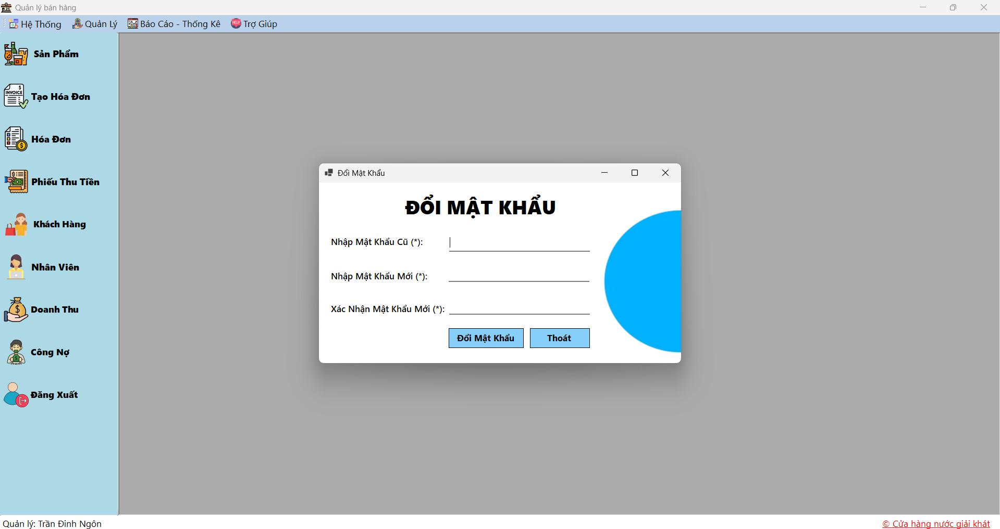
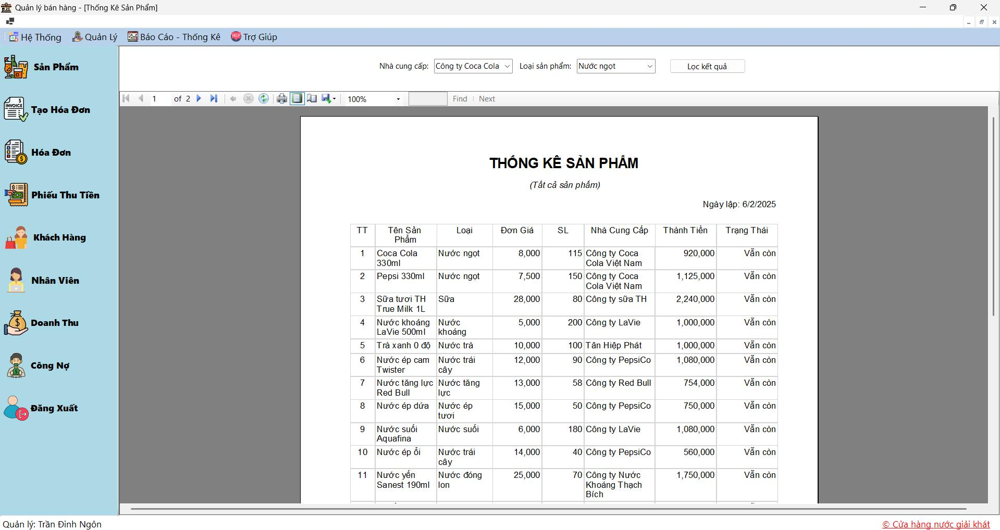

Tổng quan về phần mềm quản lý cửa hàng nước giải khát

Phần mềm quản lý cửa hàng nước giải khát được thiết kế nhằm hỗ trợ các chủ cửa hàng và nhân viên quản lý toàn diện các hoạt động kinh doanh, từ quản lý sản phẩm, tồn kho, hóa đơn đến công nợ và nhân viên.
Điểm nổi bật của phần mềm:
- Quản lý sản phẩm chính xác: Giúp theo dõi chi tiết thông tin sản phẩm, giá bán, số lượng tồn kho để không bao giờ bị thiếu hàng.
- Quản lý đơn hàng và hóa đơn: Dễ dàng tạo hóa đơn bán lẻ và bán sỉ, quản lý thanh toán và in ấn nhanh chóng.
- Quản lý công nợ và phiếu thu tiền: Theo dõi công nợ khách hàng mua sỉ, hỗ trợ thanh toán linh hoạt và quản lý phiếu thu hiệu quả.
- Báo cáo và thống kê: Cung cấp các báo cáo doanh thu, thống kê sản phẩm bán chạy để bạn đưa ra quyết định kinh doanh đúng đắn.
- Phân quyền người dùng: Bảo mật thông tin với các cấp quyền dành cho nhân viên, quản lý, kế toán và bộ phận kinh doanh.
Giao diện thân thiện và dễ sử dụng
Phần mềm có giao diện trực quan, giúp nhân viên dễ dàng thao tác và giảm thiểu sai sót trong quá trình quản lý. Ngoài ra, hệ thống được tối ưu để vận hành mượt mà trên các thiết bị phổ biến.
Giao diện đăng nhập đơn giản, bảo mật cao, giúp người dùng nhanh chóng truy cập vào hệ thống với trải nghiệm mượt mà trên mọi thiết bị.
Giao diện đổi mật khẩu thân thiện, hỗ trợ người dùng cập nhật thông tin bảo mật một cách nhanh chóng và an toàn.

Giao diện phân loại sản phẩm được thiết kế rõ ràng, giúp người dùng dễ dàng quản lý và nhóm các mặt hàng theo từng loại, hỗ trợ quá trình thống kê và báo cáo chính xác hơn.
Giao diện quản lý sản phẩm được thiết kế trực quan, giúp người dùng dễ dàng thêm, sửa, xóa và theo dõi các mặt hàng trong kho. Tất cả thông tin được cập nhật nhanh chóng, giảm thiểu sai sót và tiết kiệm thời gian quản lý.
Giao diện quản lý nhà cung cấp thân thiện, giúp cập nhật thông tin liên hệ, lịch sử cung cấp hàng hóa và các bảng báo giá nhanh chóng, hỗ trợ tối đa quá trình đàm phán và nhập hàng.
Giao diện quản lý khách hàng thân thiện, hỗ trợ cập nhật thông tin chi tiết và lịch sử mua hàng, giúp bộ phận bán hàng chăm sóc khách hàng hiệu quả và tăng sự hài lòng.

Phần mềm hỗ trợ tạo hóa đơn nhanh chóng với giao diện đơn giản, giúp nhân viên dễ dàng lựa chọn sản phẩm, số lượng và phương thức thanh toán. Tính năng tự động tính toán tổng tiền giúp đảm bảo độ chính xác cao trong quá trình bán hàng.

Giao diện quản lý hóa đơn cho phép người dùng tra cứu, chỉnh sửa và in hóa đơn một cách thuận tiện. Hệ thống lưu trữ toàn bộ lịch sử giao dịch giúp việc quản lý và báo cáo trở nên dễ dàng hơn.
Chức năng in hóa đơn giúp nhân viên nhanh chóng xuất hóa đơn bán hàng với định dạng chuẩn, rõ ràng và dễ đọc. Giao diện in hỗ trợ tùy chỉnh các thông tin hiển thị như tên cửa hàng, logo, danh sách sản phẩm, số lượng, đơn giá, tổng tiền và thông tin khách hàng. Việc in ấn hóa đơn giúp lưu trữ hồ sơ và tạo sự tin cậy với khách hàng trong quá trình giao dịch.
Chức năng in phiếu thu tiền giúp ghi nhận các khoản thanh toán từ khách hàng một cách chính xác và minh bạch. Phiếu thu tiền được thiết kế bao gồm các thông tin quan trọng như mã phiếu, ngày thu, số tiền thu, tên nhân viên thu tiền và ghi chú. Việc in phiếu thu tiền hỗ trợ quản lý tài chính dễ dàng và là bằng chứng pháp lý trong quá trình thanh toán.
Giao diện tạo và quản lý phiếu thu tiền được thiết kế tối ưu, giúp nhân viên dễ dàng ghi nhận các khoản thu từ khách hàng, đảm bảo tính chính xác và minh bạch trong thu chi.
Phần mềm cung cấp giao diện quản lý công nợ trực quan, giúp theo dõi các khoản phải thu và trạng thái thanh toán, hỗ trợ bộ phận kinh doanh nắm bắt tình hình tài chính kịp thời.
Giao diện báo cáo doanh thu rõ ràng, trực quan với các biểu đồ và số liệu chi tiết, giúp người quản lý đánh giá hiệu quả kinh doanh và đưa ra các quyết định phù hợp.
Phần mềm cung cấp báo cáo thống kê sản phẩm bán chạy, tồn kho và xu hướng thị trường, hỗ trợ tối ưu hóa nguồn hàng và kế hoạch nhập kho.

Nếu bạn có bất kỳ thắc mắc hoặc cần hỗ trợ, vui lòng truy cập vào các phần hướng dẫn chi tiết hoặc liên hệ bộ phận kỹ thuật.
Quản lý sản phẩm
Chức năng Quản lý sản phẩm cho phép bạn thêm mới, chỉnh sửa, xóa và xem thông tin chi tiết của các mặt hàng nước giải khát trong cửa hàng.
Các thao tác chính:
- Thêm sản phẩm mới: Nhập thông tin tên sản phẩm, loại, mô tả, giá bán và số lượng tồn kho.
- Sửa sản phẩm: Cập nhật các thông tin như giá, mô tả hoặc số lượng tồn kho khi cần thiết.
- Xóa sản phẩm: Loại bỏ sản phẩm không còn kinh doanh khỏi danh sách.
- Xem thông tin chi tiết: Hiển thị đầy đủ dữ liệu sản phẩm để quản lý dễ dàng theo dõi.
Hình ảnh minh họa giao diện Quản lý sản phẩm
Giao diện thân thiện, dễ sử dụng với các bảng điều khiển rõ ràng giúp bạn thao tác nhanh chóng và chính xác.
Tạo hóa đơn
Chức năng tạo hóa đơn giúp bạn lập nhanh các đơn hàng bán lẻ hoặc bán sỉ cho khách hàng với đầy đủ thông tin cần thiết.
Các bước tạo hóa đơn:
- Chọn khách hàng: Lựa chọn hoặc nhập thông tin khách hàng cho hóa đơn.
- Thêm sản phẩm: Chọn các mặt hàng từ danh sách sản phẩm, nhập số lượng và đơn giá.
- Xem tổng tiền: Hệ thống tự động tính tổng giá trị đơn hàng.
- Lưu và in hóa đơn: Lưu thông tin hóa đơn và xuất bản in ngay khi hoàn tất.
Hình ảnh minh họa giao diện tạo hóa đơn
Giao diện thân thiện giúp nhân viên dễ dàng thao tác, giảm thiểu sai sót và rút ngắn thời gian tạo hóa đơn.
Hóa đơn
Chức năng Hóa đơn cho phép bạn tra cứu, quản lý và xử lý các hóa đơn đã tạo trong hệ thống một cách hiệu quả.
Các thao tác chính:
- Tra cứu hóa đơn: Tìm kiếm hóa đơn theo mã, ngày lập, khách hàng và nhân viên lập
- Xem chi tiết hóa đơn: Hiển thị đầy đủ thông tin sản phẩm, số lượng, đơn giá và tổng tiền.
- Lưu trữ và in hóa đơn: Lưu thông tin hóa đơn đã thanh toán và hỗ trợ in ấn nhanh chóng.
Hình ảnh minh họa giao diện quản lý hóa đơn
Giao diện thân thiện với bảng điều khiển rõ ràng giúp bạn dễ dàng quản lý và theo dõi trạng thái các hóa đơn trong cửa hàng.
Nhà cung cấp
Chức năng Quản lý nhà cung cấp giúp bạn lưu trữ và cập nhật thông tin chi tiết về các đối tác cung cấp hàng hóa cho cửa hàng.
Các thao tác chính:
- Thêm nhà cung cấp mới: Nhập đầy đủ thông tin như tên, địa chỉ, số điện thoại, email và ghi chú.
- Sửa thông tin nhà cung cấp: Cập nhật các thông tin liên hệ hoặc thay đổi dữ liệu khi có sự thay đổi từ đối tác.
- Tra cứu nhà cung cấp: Tìm kiếm và lọc danh sách nhà cung cấp dựa trên tên hoặc thông tin liên quan.
Hình ảnh minh họa giao diện quản lý nhà cung cấp
Giao diện trực quan, dễ thao tác giúp bạn quản lý các nhà cung cấp hiệu quả, đảm bảo nguồn hàng luôn được cung ứng đầy đủ và kịp thời.
Loại sản phẩm
Chức năng quản lý loại sản phẩm giúp phân nhóm các mặt hàng nước giải khát theo từng danh mục cụ thể, từ đó dễ dàng theo dõi và quản lý.
Các thao tác chính:
- Thêm loại sản phẩm mới: Tạo danh mục sản phẩm mới với tên và mô tả rõ ràng.
- Sửa loại sản phẩm: Cập nhật thông tin tên hoặc mô tả loại sản phẩm khi cần thiết.
- Xóa loại sản phẩm: Loại bỏ các danh mục không còn sử dụng để giữ dữ liệu gọn gàng.
- Phân loại sản phẩm: Gán sản phẩm vào các loại phù hợp giúp hệ thống quản lý chính xác và dễ dàng thống kê.
Hình ảnh minh họa giao diện quản lý loại sản phẩm
Giao diện đơn giản, dễ sử dụng giúp bạn nhanh chóng thêm và chỉnh sửa các loại sản phẩm, nâng cao hiệu quả quản lý cửa hàng.
Khách hàng
Chức năng quản lý khách hàng giúp bạn ghi nhận, theo dõi và cập nhật thông tin chi tiết về khách hàng, bao gồm cả khách hàng lẻ và khách hàng sỉ.
Các thao tác chính:
- Thêm khách hàng mới: Nhập đầy đủ thông tin như họ tên, giới tính, địa chỉ, số điện thoại và email để tạo hồ sơ khách hàng.
- Sửa thông tin khách hàng: Cập nhật các thông tin liên hệ hoặc thay đổi dữ liệu khi có sự thay đổi từ khách hàng.
- Xóa khách hàng: Loại bỏ những khách hàng không còn hoạt động để dữ liệu được sạch và dễ quản lý.
- Tra cứu khách hàng: Tìm kiếm khách hàng theo tên, số điện thoại hoặc mã khách hàng một cách nhanh chóng.
Hình ảnh minh họa giao diện quản lý khách hàng
Giao diện thân thiện, dễ sử dụng giúp nhân viên chăm sóc khách hàng hiệu quả, nâng cao chất lượng dịch vụ và giữ chân khách hàng.
Nhân viên
Chức năng quản lý nhân viên giúp bạn lưu trữ và cập nhật thông tin chi tiết về các nhân viên trong cửa hàng, bao gồm phân quyền và quản lý tài khoản đăng nhập.
Các thao tác chính:
- Thêm nhân viên mới: Nhập thông tin cá nhân như họ tên, số điện thoại, địa chỉ, chức vụ và thông tin đăng nhập.
- Sửa thông tin nhân viên: Cập nhật các thông tin liên quan đến chức vụ hoặc thông tin cá nhân khi có sự thay đổi.
- Xóa nhân viên: Loại bỏ nhân viên không còn làm việc để đảm bảo dữ liệu luôn chính xác và an toàn.
- Phân quyền chức vụ: Thiết lập quyền hạn sử dụng phần mềm dựa trên vai trò của từng nhân viên (quản lý, bán hàng, kho, kinh doanh,...).
Hình ảnh minh họa giao diện quản lý nhân viên
Giao diện thân thiện, dễ thao tác giúp người quản lý nhanh chóng theo dõi và điều phối công việc của từng nhân viên một cách hiệu quả.
Phiếu thu tiền
Chức năng Phiếu thu tiền giúp bạn tạo và quản lý các phiếu thu tiền từ khách hàng sau khi thực hiện thanh toán, đảm bảo ghi nhận chính xác các khoản thu chi.
Các bước tạo phiếu thu tiền:
- Chọn hóa đơn cần thu tiền: Lựa chọn hóa đơn liên quan đến khách hàng để lập phiếu thu.
- Nhập thông tin phiếu thu: Ghi rõ số tiền thu, ngày thu, ghi chú và nhân viên lập phiếu.
- Xác nhận số tiền thu: Đảm bảo số tiền thu không vượt quá số tiền còn nợ của khách hàng.
- Lưu và in phiếu thu: Lưu thông tin và xuất phiếu thu để khách hàng và cửa hàng lưu trữ.
Hình ảnh minh họa giao diện tạo phiếu thu tiền
Giao diện đơn giản, thân thiện giúp nhân viên dễ dàng thao tác, đồng thời đảm bảo tính chính xác và minh bạch trong quản lý tài chính.
Công nợ
Chức năng quản lý công nợ giúp bạn theo dõi số tiền khách hàng còn phải trả, cập nhật trạng thái công nợ và đảm bảo quản lý tài chính chính xác.
Các tính năng chính:
- Theo dõi công nợ: Xem tổng số tiền phải trả, số tiền đã thanh toán và số tiền còn lại của từng khách hàng.
- Cập nhật công nợ: Ghi nhận các khoản thanh toán mới và tự động cập nhật số dư công nợ.
- Quản lý trạng thái: Phân loại công nợ theo trạng thái như "Đã thanh toán", "Còn nợ" hoặc "Quá hạn".
Hình ảnh minh họa giao diện quản lý công nợ
Giao diện trực quan và dễ sử dụng giúp bạn kiểm soát tốt tình hình tài chính và hỗ trợ công tác thu hồi công nợ hiệu quả.
Thống kê doanh thu
Chức năng Thống kê doanh thu giúp bạn theo dõi và phân tích doanh số bán hàng của cửa hàng theo các khoảng thời gian khác nhau như ngày, tuần, tháng và năm.
Các tính năng chính:
- Xem báo cáo doanh thu: Hiển thị số liệu doanh thu tổng hợp theo các mốc thời gian đã chọn.
- Phân tích xu hướng: Cung cấp biểu đồ trực quan giúp nhận biết xu hướng doanh thu, hỗ trợ ra quyết định kinh doanh.
- Xuất báo cáo: Hỗ trợ xuất báo cáo dưới các định dạng phổ biến như PDF, Excel để lưu trữ và chia sẻ.
Hình ảnh minh họa giao diện thống kê doanh thu
Giao diện trực quan, thân thiện giúp bạn dễ dàng theo dõi hiệu quả kinh doanh và điều chỉnh chiến lược phù hợp.
Thống kê sản phẩm
Chức năng Thống kê sản phẩm giúp bạn tổng hợp và phân tích số lượng sản phẩm đã bán, tồn kho hiện tại và các chỉ số quan trọng khác để quản lý kho hiệu quả.
Các tính năng chính:
- Theo dõi tồn kho: Hiển thị số lượng tồn kho hiện tại, giúp phát hiện kịp thời các sản phẩm sắp hết hàng.
- Phân tích xu hướng: Hỗ trợ đánh giá xu hướng tiêu thụ sản phẩm để điều chỉnh nhập hàng phù hợp.
- Xuất báo cáo chi tiết: Hỗ trợ xuất báo cáo dưới nhiều định dạng để lưu trữ và báo cáo quản lý.
Hình ảnh minh họa giao diện thống kê sản phẩm
Giao diện thân thiện và dễ thao tác giúp bạn theo dõi sát sao tình hình sản phẩm, từ đó tối ưu hóa việc quản lý kho và kinh doanh.
Đăng nhập
Chức năng đăng nhập cho phép người dùng truy cập vào hệ thống bằng tài khoản và mật khẩu được cấp, đảm bảo an toàn và bảo mật thông tin.
Các bước đăng nhập:
- Nhập tên đăng nhập: Nhập chính xác tên tài khoản đã được cấp bởi quản lý.
- Nhập mật khẩu: Nhập mật khẩu tương ứng với tài khoản.
- Nhấn nút Đăng nhập: Hệ thống kiểm tra thông tin và cho phép truy cập nếu đúng.
- Thông báo lỗi: Nếu thông tin sai, hệ thống sẽ hiển thị thông báo yêu cầu nhập lại.
Hình ảnh minh họa giao diện đăng nhập
Giao diện đơn giản, thân thiện giúp người dùng dễ dàng thao tác và nhanh chóng truy cập vào các chức năng của phần mềm.
Đổi mật khẩu
Chức năng đổi mật khẩu cho phép bạn cập nhật mật khẩu tài khoản một cách dễ dàng và an toàn, giúp bảo vệ thông tin cá nhân và dữ liệu hệ thống.
Các bước đổi mật khẩu:
- Nhập mật khẩu cũ: Để xác nhận bạn là chủ tài khoản.
- Nhập mật khẩu mới: Chọn mật khẩu mới đủ mạnh, bao gồm chữ hoa, chữ thường, số và ký tự đặc biệt.
- Xác nhận mật khẩu mới: Nhập lại mật khẩu mới để tránh sai sót.
- Nhấn nút “Đổi mật khẩu”: Hệ thống sẽ kiểm tra và cập nhật mật khẩu mới nếu hợp lệ.
- Thông báo thành công: Bạn sẽ nhận được thông báo khi đổi mật khẩu thành công.
Hình ảnh minh họa giao diện đổi mật khẩu
Hãy thay đổi mật khẩu định kỳ để nâng cao tính bảo mật và bảo vệ tài khoản của bạn.